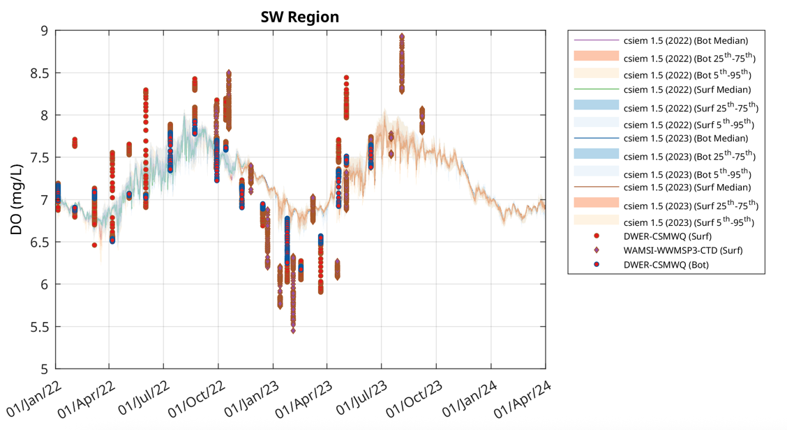
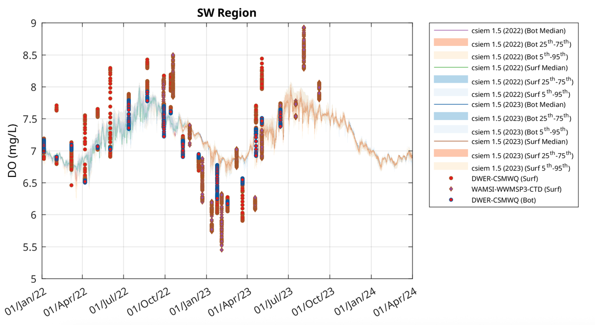
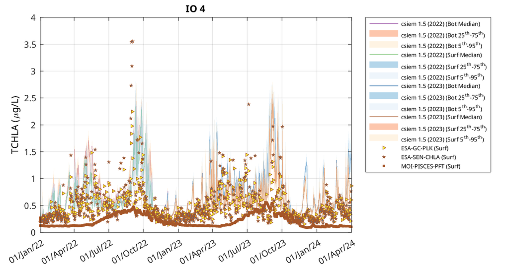
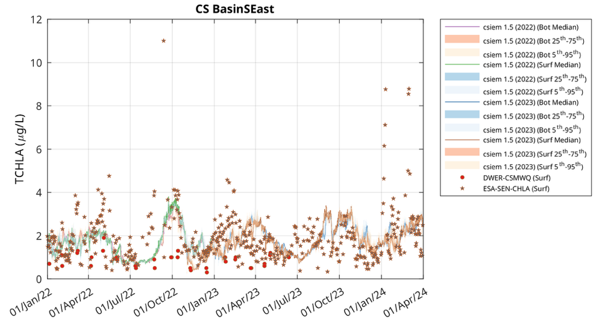
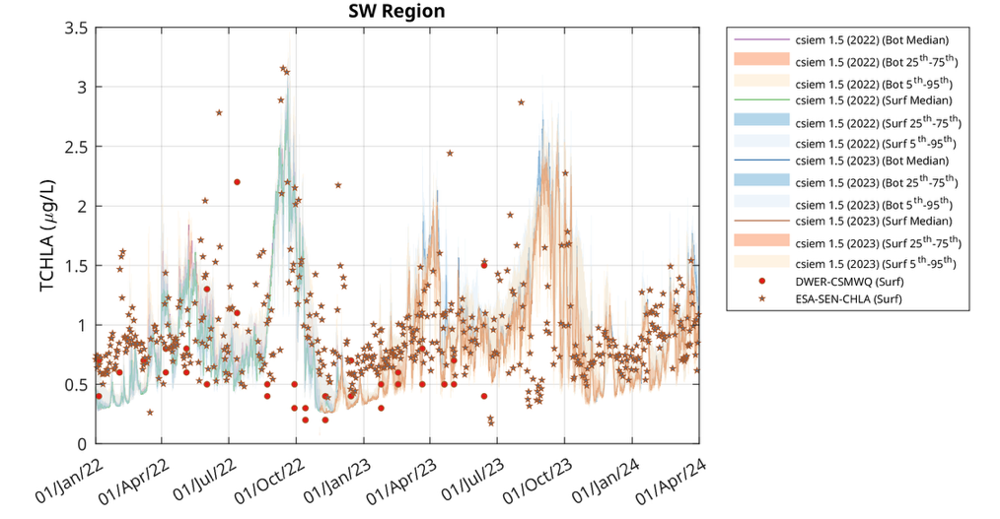
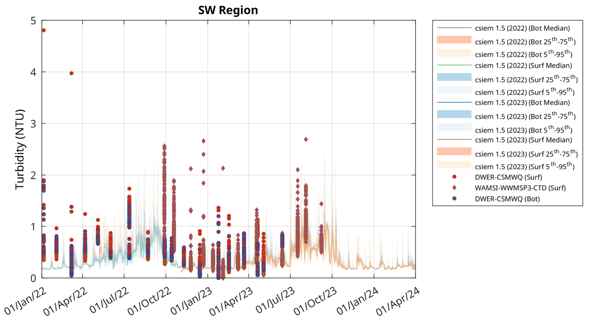
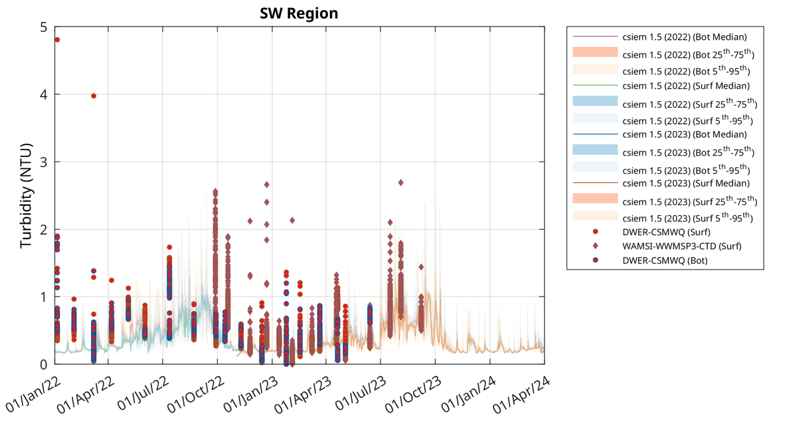
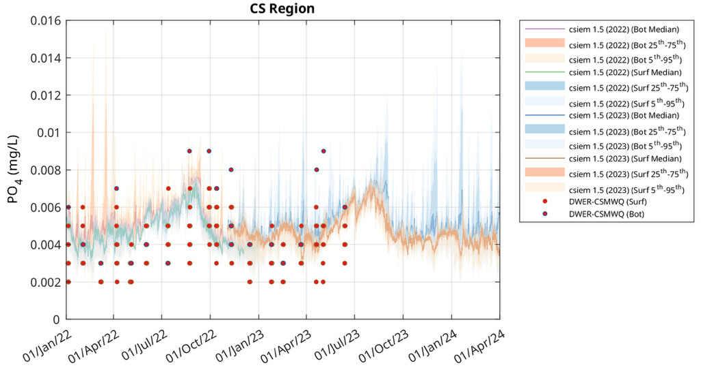
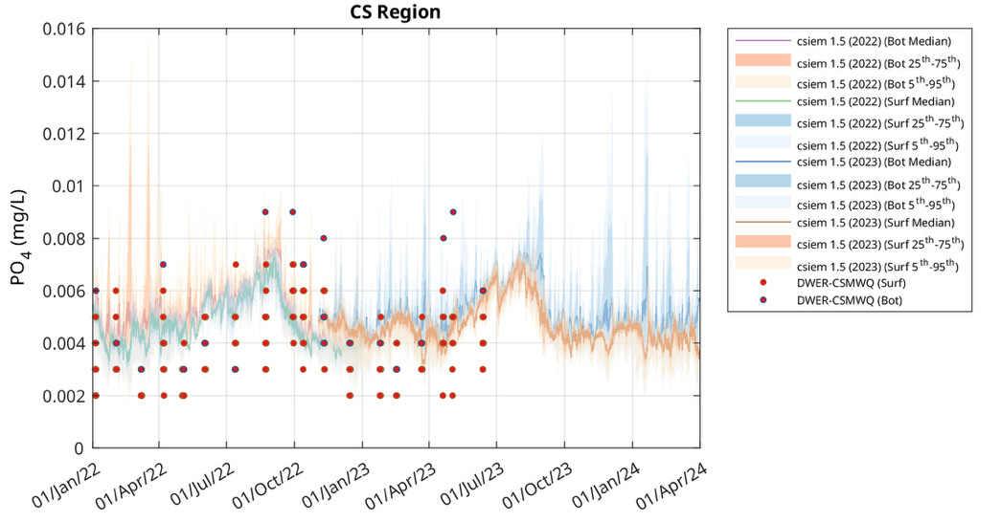

11 Water Quality
11.2 Overview
Cockburn Sound has a long and complex history of water quality changes that have made it difficult to develop a definitive model for biogeochemical processes and water quality prediction.
Elevated rates of nutrient and contaminant inputs to Cockburn Sound have occurred through atmospheric deposition, groundwater discharge, urban runoff, wastewater discharges, and internal sediment supply. Although surface freshwater inflows to the main area of Cockburn Sound are limited, nutrient concentrations have often been elevated nearshore, particularly near outfalls and drainage points. Water quality also responds to periodic pulses associated with large river flow events from the Swan-Canning estuary.
The embayment has a particularly severe history of eutrophication, with increases in wastewater and effluents over the period from the 1950s to the 1980s. The construction of the causeway to Garden Island also reduced the rate of flushing nutrients to the sea from the 1970s. The legacy of this loading and excessive productivity was the loss of over 80% of seagrass area due to this nutrient enrichment and associated increases in epiphytic growth and declines in water clarity.
Management efforts, as guided by the Cockburn Sound Environmental Protection Policy, have reduced point source nutrient loads, by improving treatment and redirecting discharges further offshore, though legacy stores in the sandy sediments remain present (Zhou et al ., 2024), groundwater inputs continue to enter the system (Greenwood et al., 201X), and internal cycling of nitrogen and phosphorus from sediments remains a significant contributor to the overlying nutrients in the water column (Eyre et al. 2025).
In recent times, some indicators of water quality have improved, such as nitrogen and phosphorus levels, however, water clarity and chl-a do not necessarily show concomitant improvements in line with these nutrient reductions. Similarly, fish-kills and algal blooms continue to be reported. Periods of stratification and have been observed that also link to the development of hypoxia. Model simulations and field studies have indicated that brine plumes from the desalinisation plant can extend several kilometres under favourable conditions and may exacerbate bottom water hypoxia by increasing density stratification and inhibiting mixing.
Given these various indicators, there is therefore a need to be able to develop an integrated approach to water quality prediction, able to be used to guide our process understanding of the current ecosystem state, the overall nutrient budget, and key water quality risks. The model approach can also be used to assess future risks, brought about by changes due to dredging, coastal modifications and climate change. In forming this integrated view, it has been necessary to first resolve the base hydrodynamics (Chapter 5), the regional ocean dynamics (Chapter 3) and the local activities and inputs (Chapter 4), that together influence local biogeochemical processes and budgets.
It is therefore the aim of this chapter to present a summary of the CSIEM v1.5 water quality configuration and assessment to date, building on what is presented in Chapters 2 – 5. Water quality simulations have been conducted for multiple years between 2011 – 2024, and assessed at > 40 assessment regions and for 10 key variables.
11.3 Water quality model setup
In the CSIEM default configuration, the water quality model AED is dynamically linked with TUFLOW-FV to simulate the mass balance and redistribution of carbon, nutrients, sediment and biotic components. This includes partitioning between organic and inorganic nutrient forms and resolution of the relevant interactions between abiotic and biotic components. Outputs additionally include light extinction and turbidity (including from particle resuspension and water column contributors), chlorophyll a (chl-a), and benthic productivity and habitat quality.
In this project, the AED model was tailored to fit the local datasets for Cockburn Sound and include the new science findings from the WAMSI Westport research program (Figure 6.1). More importantly, in CSIEM new modules for simulating the light spectrum, seagrass dynamics, and Habitat Suitability Indices (HSI) were developed, and outlined separately in Chapter 7 and 8.
Figure 6.1. A conceptual overview of the CSIEM AED configuration (top) and summary of AED sub-repositories and selected modules (bottom). The selected modules in the faint colour are included in CSIEM but not active in the release v1.5, and are under ongoing refinement.
A summary of simulated model state variables is presented in Table 2.2, and for a detailed scientific documentation of the parameterisations used in the modules, then the reader is referred to the AED Science Manual (Hipsey et al., 2022).
The configuration of the model is configured via the aed.nml file, located in the /includes/wq/ folder of the model repository. This records the specific combination of modules included (see Figure 6.1 bottom), and the final set of configured parameters.
For summary purposes, a simplified table of key water column biogeochemical parameters are presented in Table 6.1, and a simplified table of key sediment biogeochemical parameters are summarised in Table 6.2.
Table 6.1. Summary of water column biogeochemical parameter descriptions, units and typical values.
| \[Symbol\] | Description | Units | Value | Comment | ||
|---|---|---|---|---|---|---|
| Atmospheric exchange | ||||||
| \[k_{atm}^{O_{2}}\] | oxygen transfer coefficient | m/s | calculated | Wanninkhof (1992) | ||
| \[k_{atm}^{DIN}\] | dissolved inorganic nitrogen deposition rate | mmol/m2/s | calculated | |||
| \[k_{atm}^{DIP}\] | phosphate deposition rate | mmol/m2/s | calculated | |||
| Chemical oxidation | ||||||
| \[\chi_{N:O_{2}}^{nitrif}\] | stoichiometry of O2 consumed during nitrification | g N/ g O2 | 14/32 | |||
| \[R_{nitrif}^{}\] | maximum rate of nitrification | /d | 0.1 |
0.5 B 0.0-0.2 E |
||
| \[K_{nitrif}^{}\] | half saturation constant for oxygen dependence of nitrification rate | mmol O2/m3 | 78.1 | 78.1 B | ||
| \[\theta_{nitrif}^{}\] | temperature multiplier for nitrification | - | 1.08 | 1.04 1.08 B | ||
| Dissolved organic matter transformations | ||||||
| \[\chi_{C:O_{2}}^{miner},\chi_{C:O_{2}}^{PHY}\] | stoichiometry of O2 consumed during aerobic mineralization and photosynthesis | g C/ g O2 | 12/32 | |||
| \(R_{miner}^{DOC}\), \(R_{miner}^{DON}\),\(\ R_{miner}^{DOP}\) | maximum rate of aerobic mineralisation of labile dissolved organic matter @ 20C | /d | 0.008 |
0.001 – 0.05 A 0.001 – 0.028 D |
||
| \(K_{miner}^{DOC}\),\(\ K_{miner}^{PON}\),\(\ K_{miner}^{DOP}\) | half saturation constant for oxygen dependence on aerobic mineralisation rate | mmol O2/m3 | 31.25 | 47 – 78 A | ||
| \(\theta_{miner}^{DOC}\),\(\ \theta_{miner}^{DON}\),\(\ \theta_{miner}^{DOP}\) | temperature multiplier for aerobic mineralisation | 1.02 | ||||
| \[R_{denit}^{}\] | maximum rate of denitrification | /d | 0.26 | 0.5 B | ||
| \[K_{denit}^{}\] | half saturation constant for oxygen dependence of denitrification | mmol O2/m3 | 2.0 | 21.8 B | ||
| \[\theta_{denit}^{}\] | temperature multiplier for temperature dependence of denitrification | - | 1.08 | 1.08 B | ||
| Particulate organic matter transformations | ||||||
| \(R_{decom}^{POC}\),\(\ R_{decom}^{PON}\), \(R_{decom}^{POP}\) | maximum rate of decomposition of particulate organic material @ 20C | /d | 0.005 | 0.01 – 0.07 A; 0.008 C | ||
| \(K_{decom}^{DOC}\),\(\ K_{decom}^{PON}\),\(\ K_{decom}^{DOP}\) | half saturation constant for oxygen dependence on particulate decomposition (hydrolysis) rate | mmol O2/m3 | 31.25 | 47 – 78 A | ||
| \(\theta_{decom}^{POC}\), \(\theta_{decom}^{PON}\), \(\theta_{decom}^{POP}\) | temperature multiplier for temperature dependence of mineralisation rate | - | 1.02 | 1.08 B | ||
| \(\chi_{C:N}^{CPOM}\), \(\chi_{C:P}^{CPOM}\) | C:N and C:P stoichiometry of CPOM | mol:mol | 106:16:1 | |||
| \(\omega_{POC}\), \(\omega_{PON}\), \(\omega_{POP}\) | settling rate of particulate organic material | m/day | 0.06 | |||
B Based on Bruce et al. (2011) FABM-AED application on the Yarra Estuary (Victoria); estimated from data from Roberts et al. (2012).
C Based on Hamilton and Schladow (1997) for Prospect Reservoir
D Based on incubations by Petrone et al. (2009) for Swan Estuary (Western Australia)
E Based on Xia et al. (2004) for Yellow River
| Material zone ID | Name | Note | Sediment Functional Zone (1) | Roughness (m) (2) | Sediment-Water flux (mmol/m2/day) (3) | ||||||
|---|---|---|---|---|---|---|---|---|---|---|---|
| Oxygen | PO4 | NH4 | NO3 | DOC | DON | DOP | |||||
| 1 | Default model domain background | Not used, just captures any unallocated cells if shapefiles are do not fully overlap | 0.02 | 0 | 0 | 0 | 0 | 0 | 0 | 0 | |
| 16 | Swan River | non-vegetated lower Swan estuary sediment | Type 2: deep basin | 0.004 | -40 | 0.08 | 0.4 | 1.3 | -52 | -5.2 | -0.4 |
| 21 | Cockburn (23-31) | sediment grain size (uM), from Skene et al (2005) | Type 2: deep basin | 0.001 | -45 | 0.09 | 0.45 | 1.5 | -60 | -6 | -0.44 |
| 22 | Cockburn (31-63.5) | sediment grain size (uM), from Skene et al (2005) | Type 2: deep basin | 0.002 | -40 | 0.08 | 0.4 | 1.3 | -52 | -5.2 | -0.4 |
| 23 | Cockburn (63.6-125) | sediment grain size (uM), from Skene et al (2005) | Type 2: deep basin | 0.004 | -40 | 0.08 | 0.4 | 1.3 | -52 | -5.2 | -0.4 |
| 24 | Cockburn (125-250) | sediment grain size (uM), from Skene et al (2005) | Type 3: shelf + MPB | 0.008 | -40 | 0.08 | 0.4 | 1.3 | -52 | -5.2 | -0.4 |
| 25 | Cockburn (250-350) | sediment grain size (uM), from Skene et al (2005) | Type 3: shelf + MPB | 0.01 | -35 | 0.07 | 0.35 | 1.12 | -44.8 | -4.48 | -0.36 |
| 26 | Cockburn (350-500) | sediment grain size (uM), from Skene et al (2005) | Type 3: shelf + MPB | 0.015 | -30 | 0.06 | 0.3 | 1 | -40 | -4 | -0.32 |
| 27 | Cockburn (500-1000) | sediment grain size (uM), from Skene et al (2005) | Type 3: shelf + MPB | 0.02 | -25 | 0.05 | 0.25 | 0.8 | -32 | -3.2 | -0.24 |
| 59 | Artificial structure | 0.2 | 0 | 0 | 0 | 0 | 0 | 0 | 0 | ||
| 60 | Seagrass (Swan River) | Halophila dominant community | Type 4: shelf + seagrass | 0.1 | -5 | -0.012 | -0.06 | -0.18 | 0 | 0 | 0 |
| 61 | Soft substrate (Sand) | Type 1: offshore | 0.008 | -15 | 0.03 | 0.15 | 0.5 | -20 | -2 | -0.16 | |
| 68 | Hard substrate (Reef with macroalgae) | 0.1 | 0 | 0 | 0 | 0 | 0 | 0 | 0 | ||
| 70 | Mixed substrate | 0.05 | -10 | -0.02 | -0.01 | -0.03 | 0 | 0 | 0 | ||
| 90 | Seagrass (Amphibolis) | Type 4: shelf + seagrass | 0.1 | -5 | -0.012 | -0.06 | -0.18 | 0 | 0 | 0 | |
| 91 | Seagrass (P australis dominant community) | merged from categories "P. australis", "P. australis Amphibolis", "P. australis P. sinuosa", "P. australis P. sinuosa Amphibolis" | Type 4: shelf + seagrass | 0.1 | -5 | -0.012 | -0.06 | -0.18 | 0 | 0 | 0 |
| 92 | Seagrass (P coriacea dominant community) | merged from categories "P. coriacea", "P. coriacea Amphibolis", "P. coriacea Amphibolis with Halophila" | Type 4: shelf + seagrass | 0.1 | -5 | -0.012 | -0.06 | -0.18 | 0 | 0 | 0 |
| 93 | Seagrass (P sinuosa dominant community) | merged from categories "P. sinuosa", "P. sinuosa Amphibolis", "P. sinuosa P. coriacea Amphibolis" | Type 4: shelf + seagrass | 0.1 | -5 | -0.012 | -0.06 | -0.18 | 0 | 0 | 0 |
| 94 | Lyngbya | this may be updated at a later stage by Theme2.1 as it could be interspesed with ephemeral seagrass | Type 4: shelf + seagrass | 0.1 | -5 | -0.012 | -0.06 | -0.18 | 0 | 0 | 0 |
| 95 | Cobble | Type 3: shelf + MPB | 0.1 | -5 | -0.012 | -0.06 | -0.18 | 0 | 0 | 0 | |
\(1\) the sediment functional zone is associated with the types specified in the sediment biogeochemistry model;
\(2\) For roughness, CSIEM used the 'ks' bottom drag model, in which the values are 'equivalent Nikuradse roughness (m)';
\(3\) The Sediment-Water flux settings are assumed maximum fluxes in each zone combining sediment survey data (Eyre et al., 2025) and relevant environmental factors. The final modelled fluxes are also subject to oxygen concentration (redox potential) and temperature within the bottom water.
11.5 Dissolved oxygen
The concentrations of dissolved oxygen within the Cockburn Sound presented a seasonal pattern, mostly due to the changes in the oxygen solubility affected by water temperature and salinity.
Initial calibration of CSIEM was undertaken on the 2013 data-set where past Water Corporation monitoring data was available to guide estimates of sediment oxygen demand. The model was able to capture not only the seasonal variability, but also the periodic stratification events causing separation in oxygen concentrations between the surface and bottom water. This is particularly proved during the low oxygen events recorded at the deep water of the Sound, with a DO concentration below 4 mg/L recorded in April 2013. The model is shown to well capture the timing and the magnitude of the low oxygen event.
The spatial variability during this autumn drawdown event is further outlined in Figure 6.3, which shows the expansion of the hypoxic dome within the basin, and then its dissipation as it is mixed back to the surface.

Figure 6.2. Example oxygen validation plots for the main Cockburn Sound deep basin, comparing seasonal changes and the notable autumn hypoxia event with available monitoring data.
Figure 6.3 (overpage). Above sea-bed oxygen concentrations over the course of the hypoxia event shown in Figure 6.2, showing initial build up during thermal stratification (panel 1), intensification across the basin (panel 2), and final redistribution of the hypoxic water around the Sound was wind mixing resumes (panel 3).


Further validation of the model was undertaken by comparing other time-periods in the simulation with available data in the csiem-data catalogue. Several additional examples are shown below in Figure 6.4, displaying different behaviour at north and south of the Sound, and outside of the basin.

 

Figure 6.4. Comparison of dissolved oxygen concentration in three model assessment regions for the period between Jan 2022 and Apr 2024, comparing the model simulations (mean and range) against various data-sets in the csiem-data catalogue. Note the data indicated by blue-stars is not quality controlled in this image.
11.6 Chl-a and phytoplankton biomass
The concentrations of chl-a within Cockburn Sound and more broadly across the domain do present presented a seasonal pattern, but with high spatio-temporal variability. Figure 6.5 summarises three regions spanning from north-west of Rottnest to within the main Cockburn Sound basin to the southern region of the domain, and compares the model against both in situ and satellite-derived Chl-a estimates.

Figure 6.5. Comparison of total chl-a concentrations predicted in three model assessment regions for the period between Jan 2022 and Apr 2024, comparing the model simulations (mean and range) against various data-sets in the csiem-data catalogue. Note different y-axis scale limits. The star symbol denotes Chl-a product form the Sentinel platform (ESA-SEN-CHLA) and is uncalibrated to local data.
To confirm the phytoplankton group structure (i.e., “assemblage”), a comparison of the relative biomass within the four main PFT’s was undertaken, showing the model biomass relative to the ESA group estimate, and at an offshore and nearshore site (Figure 6.6).

Figure 6.6. Comparison of the relative contribution of phytoplankton functional types to the total biomass, based on comparison with the ESA optical estimate of those groups at an offshore (top) and nearshore (bottom) location.
A comparison of the average conditions across Cockburn Sound shows that the mean and range of the model concentrations over this region is similar to the mean and range of Chl-a seen across the monitoring sites, though a tendency to over-predict in the autumn period is evident (Figure 6.7). Further calibration will be undertaken following finalisation of the groundwater input loads, zooplankton configuration and sediment-water flux estimates.

Figure 6.7. Regional average concentrations comparing pelagic concentrations of Chl-a (top, ug/L) and benthic concentrations of MPB (bottom, mmol/m2). The upper panel compares the model against the CSMC Chl-a grab sample data (stars) collected across all monitoring sites within the domain.
11.7 Turbidity
Turbidity in the model is computed based on specific attenuation coefficients associated with the different optically active constituents (e.g. suspended sediment, chl-a etc). Turbidity observations in the domain is highly variable across the gradient form the estuary to the sound to the open ocean, being impacted by both physical processes (resuspension and mixing), and biogeochemical processes (chl-a blooms and detritus mineralisation, for example). The model captures the mean values and seasonal patterns in turbidity well (Figure 6.8).
Within Owen Anchorage (e.g. Carnac in Figure 6.8), the turbidity is responding to short-term wind-wave induced resuspension events, superimposed on a seasonal trend, associated with productivity and materials being discharged from the Swan estuary. On the Kwinana Shelf this signal is still evident but further complicated by some large turbidity pulses around the period of April 2023. These are likely associated with shipping-induced turbidity as this region is highly active, and we don’t see these spikes in other locations with similar wave exposure, such is the south west region also shown in Figure 6.8.

 

Figure 6.8. Comparison of turbidity concentrations predicted in three model assessment regions for the period between Jan 2022 and Apr 2024, comparing the model simulations (mean and range) against various data-sets in the csiem-data catalogue. Note different y-axis scale limits. The data represented in these plots represents data collected as depth-resolved profiles that are aggregated into either surface or bottom locations categories based on depth.
11.8 Nutrients – Nitrogen, Phosphorus
The nutrient concentrations within the Cockburn Sound are generally below the default guideline values (DGVs) for chemical stressors for south-west Australia (ANZECC & ARMCANZ, 2000). The TN concentration varied around 0.10 – 0.15 mg/L in year 2022, in comparison to the DGV of 0.23 mg/L. While the TP concentration varied around 0.014 – 0.018 mg/L, in comparison to the DGV of 0.020 mg/L. The dissolved inorganic nitrogen and phosphorus (ammonium, nitrate, and phosphate) are also below or varied around the DGV of 0.005 mg/L. The TCHLA concentration varied around 0.4 – 1.8 µg/L, in comparison to the DGV of 0.70 µg /L.
The model reasonably captured the range of dissolved inorganic nutrient concentrations (PO4, NO3 and NH4) within the Cockburn Sound (Figure 6.9), but has a tendency to over-predict the TN and TP concentrations, particularly in the winter time. This suggests the amount of DON and DOP in the water column is predicted to be too high in this version.
Investigations into this have been undertaken by comparing sensitivity sims of a range of factors. In particular, their remains uncertainty about the magnitude of groundwater inputs of N and also the seasonality of sediment release of N and P.
 

Figure 6.9a. Comparison of phosphorus concentrations averaged across the Cockburn Sound region for the period between Jan 2022 and Apr 2024, comparing the model simulations (mean and range) against data-sets in the csiem-data catalogue..


Figure 6.9b. Comparison of nitrogen concentrations averaged across the Cockburn Sound region for the period between Jan 2022 and Apr 2024, comparing the model simulations (mean and range) against data-sets in the csiem-data catalogue..
A nutrient budget was therefore undertaken to explore further explore the nitrogen dynamics within the model (Figure 6.10). The budget compares the relative size of the N pools, the dominant N fluxes across the sediment-water interface, and the magnitude of horizontal inputs and outputs.

Figure 6.11. Nitrogen budget of the Cockburn Sound region, highlight the pools and pathways of different nitrogen species.
Looking into the N supply further, groundwater N applied to the model is causing an increase of the order of 0.02 mg/L (Figure 6.11) which is an order of magnitude lower than the discrepancy in TN, so is likely to low to explain the difference. On the other hand, the updated groundwater modelling has indicated this source may be overpredicted and once the new groundwater model outputs are included then nutrient levels will likely reduce further. From an assessment of the nitrogen budget it is indicating that the sediment release of N is most likely leading to the over-prediction.
Figure 6.11. Depiction of the groundwater N concentrations coming into CSIEM model domain.
11.9 Limitations and further work
The current model version presented in this chapter is performing well against available the available field data assessed so far, capturing the horizontal and vertical variability in oxygen, chl-a, turbidity, and nutrients across a range of met-ocean conditions. Uncertainty still remains in closing the nutrient budget, as there are discrepancies in the total nutrient pools that need further refinement. Further effort in the ongoing calibration is needed to rectify the over-prediction in organic N and P pools within the water column, and nutrient recycling.
Specifically, further limitations include:
Groundwater nutrient loads included in this model version are from the initial estimate, and subject to change once final integration with the refined groundwater loading estimates from project 3,3 are included.
Zooplankton have not been included in this model version and the final nutrient budget and phytoplankton patterns in the model are subject to change once this component is included.
Further local calibration of Chl-a data from Sentinel relative to local measurements.
Refinement of sediment-water fluxes, and microphytobenthos biomass validation against sediment chl-a data.
Further refinement will be undertaken during final calibration once the benthic and pelagic modules are finalised. This is scheduled as part of the planned CSIEM v2.0 release which once the groundwater model and other data-sets this model calibration relies upon are finalised. The data used in preparing these assessments is from varied sources and available in the CSIEM data catalogue (Figure 6.12) as described in Hipsey et al. (2025). Further data sets are being added and are able to be used in ongoing model assessment and refinement.

Figure 6.12. Summary of CSIEM data catalogue showing identified nutrient data. Visit the csiem-data catalogue for further information.